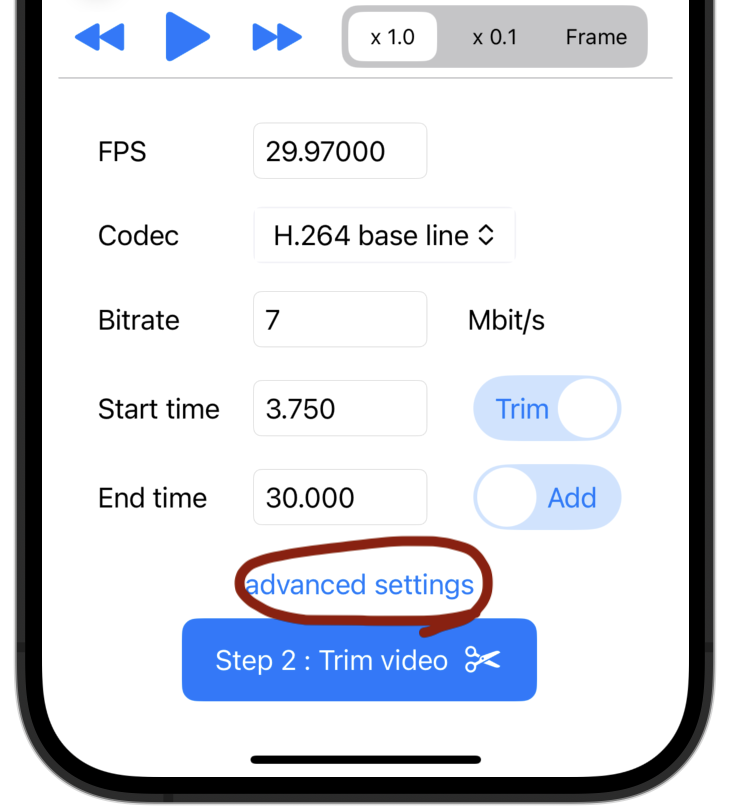

And you can change fps, bitrate, codec too.
Video only. Do not copy audio.
Step 1: Select video file from device (Files app).
Step 2: Input new video parameter, and trim video!
If you want to edit a part of the video much more, set the time and action on the advanced page.
